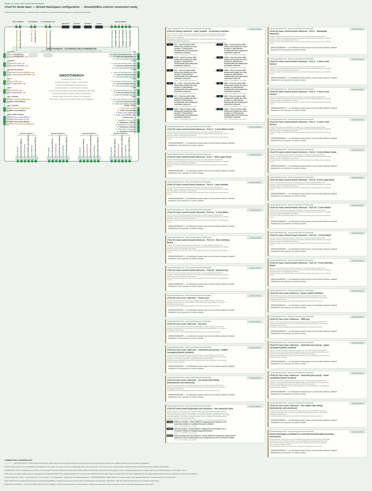

xTool S1 diode laser — Bristol Hackspace configuration
Research reference only — not wiring instructions. DOTTED = GUESS; any dotted guess requires an explicit evidence-backed route row. OPEN = no connection established. This profile has zero SmoothieBox routes and zero guesses. The family-level pin chart does not prove Bristol unit fitment.
Current complete interface diagram
The exterior drawing individually labels all 82 SmoothieBox contacts (including axis STEP, direction, enable, endstop GND and signal positions). It separately shows the 12 numbered xTool module contacts and the 15 named mainboard port groups plus nine visibly separate rear-cover interface items across seven manufacturer callouts, three diagnostic test locations, and the unresolved fitted-unit boundary. Mainboard and rear contacts remain unspecified.

Laser module · 12 numbered positions
Labels transcribed from xTool’s S1 family-level chart. The numbered layout and label chart are separate source images; they do not establish Bristol module/cable fitment, the mainboard mating view, or compatibility with SmoothieBox. Labels such as VCC3, BL_T_SW and #TXD/#RXD are retained literally.
| Manufacturer position | Manufacturer label | Connection status |
|---|---|---|
| 1 | 24V | OPEN — manufacturer family-level module reference; Bristol fitment and mating orientation unverified. |
| 2 | VCC3 | OPEN — manufacturer family-level module reference; Bristol fitment and mating orientation unverified. |
| 3 | 24V | OPEN — manufacturer family-level module reference; Bristol fitment and mating orientation unverified. |
| 4 | BL_T_SW | OPEN — manufacturer family-level module reference; Bristol fitment and mating orientation unverified. |
| 5 | 24V | OPEN — manufacturer family-level module reference; Bristol fitment and mating orientation unverified. |
| 6 | GND | OPEN — manufacturer family-level module reference; Bristol fitment and mating orientation unverified. |
| 7 | GND | OPEN — manufacturer family-level module reference; Bristol fitment and mating orientation unverified. |
| 8 | #TXD | OPEN — manufacturer family-level module reference; Bristol fitment and mating orientation unverified. |
| 9 | PWM | OPEN — manufacturer family-level module reference; Bristol fitment and mating orientation unverified. |
| 10 | GND | OPEN — manufacturer family-level module reference; Bristol fitment and mating orientation unverified. |
| 11 | GND | OPEN — manufacturer family-level module reference; Bristol fitment and mating orientation unverified. |
| 12 | #RXD | OPEN — manufacturer family-level module reference; Bristol fitment and mating orientation unverified. |
Main control board · 15 named port groups
xTool’s port guide identifies these groups by number and name only. No electrical pins or contact counts are supplied by that source, so no individual contacts are invented.
- Port 1: Baseplate Detection — group name only; contact count, numbering and pin functions not published.
- Port 2: Z-Axis Limit Sensor — group name only; contact count, numbering and pin functions not published.
- Port 3: Y-Axis Limit Sensor — group name only; contact count, numbering and pin functions not published.
- Port 4: X-Axis Limit Sensor — group name only; contact count, numbering and pin functions not published.
- Port 5: Y-Axis Motor Coder — group name only; contact count, numbering and pin functions not published.
- Port 6: X-Axis Motor Coder — group name only; contact count, numbering and pin functions not published.
- Port 7: Rear Light Panel — group name only; contact count, numbering and pin functions not published.
- Port 8: Front Light Panel — group name only; contact count, numbering and pin functions not published.
- Port 9: Laser Module — group name only; contact count, numbering and pin functions not published.
- Port 10: Z-Axis Motor — group name only; contact count, numbering and pin functions not published.
- Port 11: Y-Axis Motor — group name only; contact count, numbering and pin functions not published.
- Port 12: X-Axis Motor — group name only; contact count, numbering and pin functions not published.
- Port 13: Rear Interface Board — group name only; contact count, numbering and pin functions not published.
- Port 14: Front Interface Board — group name only; contact count, numbering and pin functions not published.
- Port 15: Exhaust Fan — group name only; contact count, numbering and pin functions not published.
Rear cover · seven source callouts / nine visible interface items
The guide names seven callouts. Its photograph shows three separate receptacles beneath the plural extension-ports callout; upper, middle and lower here describe only their visible positions and are not manufacturer connector names or pin numbering.
- Power switch — contact count and pinout not published.
- Power port — contact count and pinout not published.
- USB port — contact count and pinout not published.
- Key port — contact count and pinout not published.
- Extension-port callout, upper receptacle in photograph — location description only; contacts unknown.
- Extension-port callout, middle receptacle in photograph — location description only; contacts unknown.
- Extension-port callout, lower receptacle in photograph — location description only; contacts unknown.
- Air-assist tube fitting — mechanical, not an electrical pin group.
- Fire-safety tube fitting — mechanical, not an electrical pin group.
Sources and limits
- xTool S1 Won’t Fire Laser — family-level 12-position module numbering/function chart and board test-pad illustration.
- xTool S1 main-control-board ports — 15 named board port groups.
- xTool S1 rear-cover ports — rear controls, ports and tube fittings.
- Bristol Hackspace xTool S1 page — local machine and safety description; no pinout.
Board test points · separate from connector pins
The troubleshooting article shows three distinct diagnostic references: PWM test location, 24V test location, and GND measurement at a mounting-hole reference. These are not numbered connector contacts. Under the article’s stated 100% processing-power diagnostic procedure, expected readings are 3.2–3.3 V from PWM to GND and about 24 V from 24V to GND; these are diagnostic readings, not input ratings or tolerances.
- PWM test location — no machine-to-SmoothieBox route established.
- 24V test location — no machine-to-SmoothieBox route established.
- GND mounting-hole reference — exact number and full set of physical locations not inventoried.
The Bristol wiki does not identify the fitted controller/module/cable interface; the diagram retains it as an empty OPEN boundary. No SmoothieBox route is justified by these sources. DB25 is not evidenced.
Legacy captured 181-position Core P1 schedule (retained)
This earlier 181-row Core P1 contact schedule is preserved byte-for-byte. It is distinct from the current 82 SmoothieBox exterior contacts and the 12 xTool module positions above; its old machine-side inventory is not adopted as current evidence.